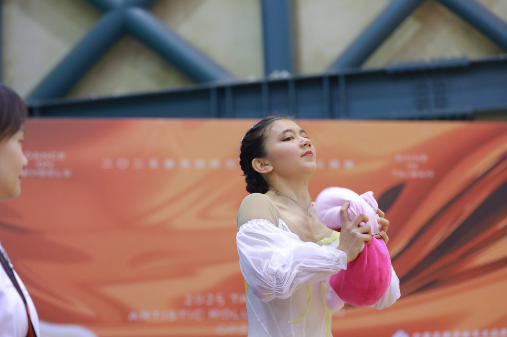
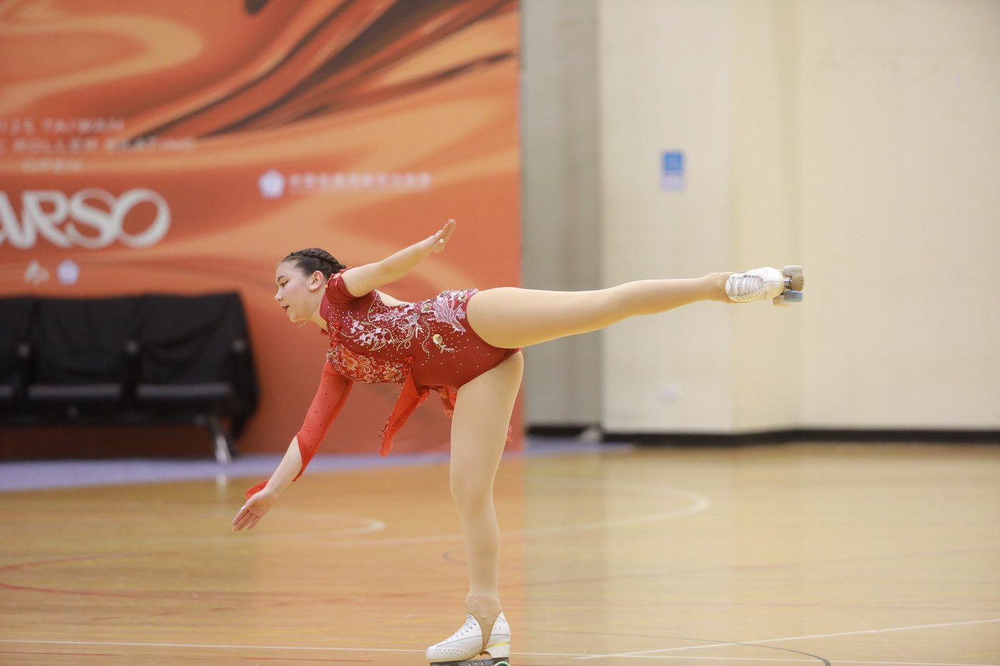
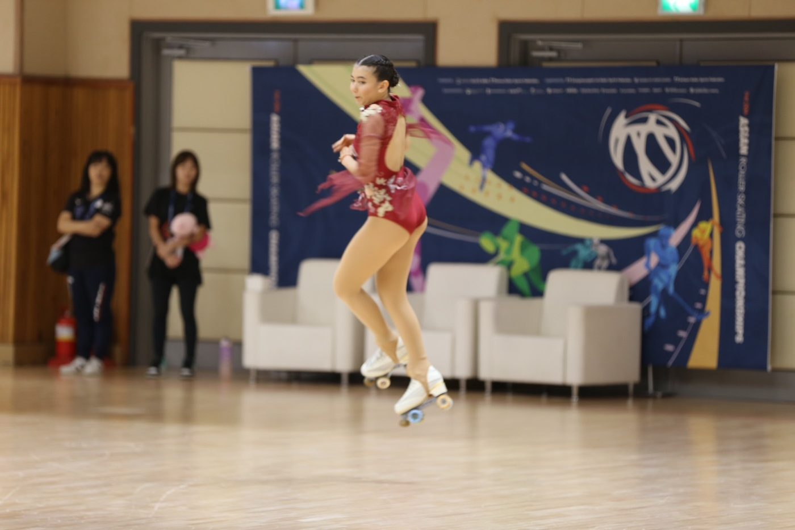

01我的故事
我直到國小五年級下學期才開始接觸花式滑輪溜冰，即使相對於其他選手起步晚許多，我並不因此氣餒，反而更加投入地練習和追進度，期待自己有朝一日能成為一名傑出的選手。
在2018年，我經歷了一段讓我難以忘懷的時期。當時，我對溜冰有著濃厚的熱情，每天都在不斷地訓練自己的技巧。然而，命運卻開了一個惡作劇，讓我骨折了兩次。
在第一次骨折後，我還是堅持練習，雖然受傷的部位仍在康復中，但我相信只要堅持下去，最終會有收穫。然而，不幸的是，我不久後又因為一次小失誤再度骨折。這一次，我被迫停止了半年的訓練和比賽，進行著長時間的康復治療。
那段時間，我感到非常失落和無助。我無法在冰上展現自己的能力，無法感受到訓練的成就感，無法參加比賽和與他人競爭。但是，我並沒有放棄對溜冰的熱愛。即使手上打著沉重的石膏，我仍然想要繼續練習，提高自己的技術水平。
在練習的過程中，我發現即使是在受傷的情況下，我仍然能夠做出一些進步。雖然動作有所限制，但我發現自己可以更加注重技術的細節，並將其完美地呈現出來。這讓我更加堅定了自己對溜冰的熱愛和決心。
終於，在半年的康復期過後，我重返冰場。當我站在那片寒冷的冰面上，我感到自己好像又回到了家一樣。我開始重拾自己以前的訓練，進行著各種技術上的挑戰，並不斷地挑戰自己的極限。
在經過努力和堅持後，我在2018年和2019年成功入選團體花式滑輪溜冰國家代表隊，並有機會參加世界錦標賽。尤其是在四人團花項目中，我與隊友們攜手合作，最終拿下第13名的佳績，這是台灣歷史上在四人團花項目中的最好成績。此外，在比賽中觀察各國好手的表現，更加激發了我在個人技巧上的精進期望。
近兩年來，我的溜冰技巧一直是我學習和進步的重點。我對自己的技術要求很高，因為我深知這是我能夠在比賽中脫穎而出的關鍵。為了達到更高的技術水平，我開始積極參與各種訓練和比賽，尋求更多的學習機會和挑戰。
其中，除了跟台灣國家級教練唐竺瑋教練學習之外，我另一重要的學習方式是與西班牙教練Anna Guillamon進行線上課程的學習。Anna是一位非常優秀的教練，她對溜冰的技巧和細節有著非常深入的了解，並且總是能夠提供我最適合的建議和指導。透過網路，我們可以跨越國界進行溝通，這樣的學習方式也讓我有機會接觸到更多國際上的學習資源和訓練方法，讓我的技術水平有了更大的提升。除此之外，寒暑假，我都會參加西班牙的移地訓練，更增進我的技術。
我的獨特學習方式和學習成果，引起了天下雜誌的注意。在2021年教育專刊中，他們選擇了我作為封面人物，進一步介紹我在溜冰和學業方面的成就。這個榮耀，對我來說是一個巨大的鼓舞和肯定，也讓更多人能夠認識我和我的學習方式。
這次專訪，讓我有機會與專業記者進行深入的交流和分享，向大眾介紹我從事溜冰的心路歷程和學習心得，以及如何在學業和競技中保持平衡和進步。這樣的機會，不僅讓我更深入地反思和總結自己的學習經驗，還可以讓更多人了解到線上學習的優點和重要性，對於教育和學習的發展有著積極的推動作用。
除了線上課程，我也更加積極參與各項國內比賽。這些比賽不僅是磨練我的技術和比賽經驗的機會，也是一個與其他選手交流學習的平台。我在比賽中不斷地挑戰自己，嘗試新的技巧和動作，並且積極地向其他選手學習他們的表現和技巧。透過這樣的方式，我不斷地成長和進步，讓自己更加優秀和自信。
在2023年，我成功地取得了以個人名義代表台灣出國比賽的資格。這是一個非常難得的機會，讓我能夠與世界各地頂尖選手競技，進一步提升自己的技術和表現。我成功地在亞洲錦標賽青年女子組獲得冠軍，為國家爭光。
我深信，花式滑輪溜冰是一種非常獨特且美妙的運動，它需要選手們具備出色的技巧和協調性，也需要有良好的自信和表現力。通過這項運動，我學到了許多關於自己和人生的道理，並建立了許多長久的友誼。在未來，我更期待能夠把這項力與美的運動推廣出去，鼓勵更多人參與花式滑輪溜冰，並展現出自己的風采。很幸運的，我在2021年的台北市教育局之非學校實驗型態教育創新發展中心舉辦的開學趴【自學森友會】上，代表自學生表演溜冰，也有一個難得機會跟前教育部長 曾燦金 及其他長官互動交流。除此之外，在2022年的【台北市教育博覽會】上，我代表著自學生推廣多元教育管道，也非常得榮幸得與前台北市長 柯文哲市長，再次合影。
此外，在同年的第45屆花式滑輪全國中正盃錦標賽中，我於社會大專組分別取得基本型第四名、自由型第三名以及綜合型第二名的佳績。
進入2024年，我持續積極參與國際賽事，並在第一屆臺北國際花式溜冰公開賽中摘下銀牌；隨後於紐西蘭舉行的泛太平洋盃奪冠。同年，我在第46屆花式滑輪全國中正盃錦標賽中，於社會大專組取得基本型第三名、自由型第二名以及綜合型冠軍的榮耀，為我的運動生涯再添亮點。
在 2025年，我在第一屆臺灣國際花式溜冰公開賽中摘下銀牌；隨後於澳洲舉行的泛太平洋盃奪冠。同年，我也在亞錦賽奪得第四名。
我相信，只要我繼續努力和堅持，我的花式滑輪溜冰夢想一定會實現！我也期待能夠與更多志同道合的選手一同前進。


